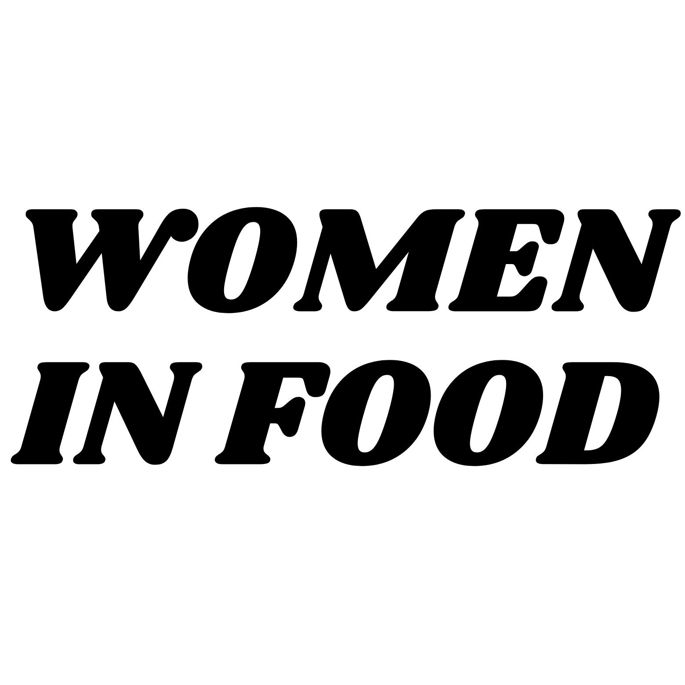
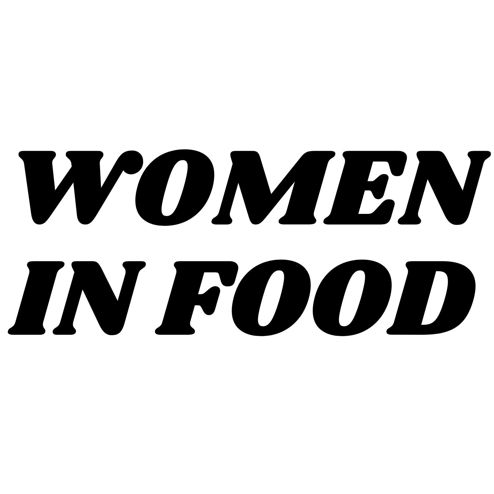

Equitable Representation in Media is important

about
Although half of culinary school students are female, less than 7
percent of professional chefs are women. If they do get a
professional job, they are likely to be paid less than their
counterpart. There are sections in the food industry however that
are making strides to address general equality. On this website,
I am sharing a list of successful women in food media, writing,
and hospitality. I hope this tool will inspire you to share this
knowledge with others and lead the way to racial equity.
about me
welcome! My name is Jessica Burke and I am an avid foodie and a beginner in coding! Thank you so much for viewing my project!
1: food media
padma lakshmi
- Padma Lakshmi is an Indian author and television host. She is the creator of the Hulu series Taste the Nation and host of Bravos series Top Chef, now in its 20th season. She published the cookbooks "Easy Exotic," and "Tangy, Tart, Hot, and Sweet" in 2007. She then published her memoir "Love, Loss, and What We Ate," and the book titled "The Encyclopedia of Spices and Herbs." As one of nthe first Indian women in mainstream food media, she is a trailblazer for independent Brown foodies.
julia child
Julia Child was a television personality who made French cuisine accessible to American audiences. She was one of the first women to host her cooking show on television. She brought French techniques to America through her cooking titled Mastering the Art of French Cooking Her television programs include The French Chef, Cooking with Master Chefs, and Julia Child & Jacques Pépin Cooking at Home. Her Julia Child Foundation for Gastronomy and Culinary Arts continues her goal of spreading cooking knowledge to the public.
christine ha
- Christine Ha is the blind chef and writer most known for winning “MasterChef" season 3. She is a New York Times best-seller cookbook seller and currently owns multiple restaurants. Her restaurants including The Blind Goat and Xin Chào are a representation of how anything you put your mind to is possible.
1: food media
padma lakshmi
- Padma Lakshmi is an Indian author and television host. She is the creator of the Hulu series Taste the Nation and host of Bravos series Top Chef, now in its 20th season. She published the cookbooks "Easy Exotic," and "Tangy, Tart, Hot, and Sweet" in 2007. She then published her memoir "Love, Loss, and What We Ate," and the book titled "The Encyclopedia of Spices and Herbs." As one of nthe first Indian women in mainstream food media, she is a trailblazer for independent Brown foodies.
julia child
Julia Child was a television personality who made French cuisine accessible to American audiences. She was one of the first women to host her cooking show on television. She brought French techniques to America through her cooking titled Mastering the Art of French Cooking Her television programs include The French Chef, Cooking with Master Chefs, and Julia Child & Jacques Pépin Cooking at Home. Her Julia Child Foundation for Gastronomy and Culinary Arts continues her goal of spreading cooking knowledge to the public.
christine ha
- Christine Ha is the blind chef and writer most known for winning “MasterChef" season 3. She is a New York Times best-seller cookbook seller and currently owns multiple restaurants. Her restaurants including The Blind Goat and Xin Chào are a representation of how anything you put your mind to is possible.
food writing
Edna Lewis is a renowned cookbook author and chef who taught the American public to appreciate southern meals. She is one of the first African American women to publicly write a cookbook. Lewis inspired a new wave of incorporating food with culture to teach about traditional cuisine.
Marion Nestle is Professor at New York University most known for her series about Food Politics. From nutrition to pe food, she uncovers the truth about the food industry. She brings attention to how food and politics are interconnected and the importance of food in all aspects of life. She currently blogs at www.foodpolitics.com
Alice Louise Waters is a chef, activist, restaurateur, and author. She is most widely known for starting the farm-to-table movement, which encourages the use of local, organic produce in restaurants and home cooking. This movement reduces the amount of waste in the food industry, and also encourages healthy, clean eating. She started her organization The Edible Schoolyard Project in 1995 to educate students about nutrition and sustainable food. Its comprehensive program teaches students gardening, food choices, and healthy recipes. She is an inspiration to not only to me but also young children all over the world.
hospitality
Cristeta comerford: Cristeta "Cris" Comerford is a Filipin0-American
who is the first woman to become the executive chef at the White House.
Her passion for healthy eating inspired Mrs. Michelle Obama to combat
the obesity problem in school lunches. Comerford designs menus for
official dinners at the White House and mentors other chefs across
the United States.
Mariya Russell is the first Black woman chef to earn a Michelin
star. The Michelin star is the highest honors a chef and
restaurant can receive. She attended the Cooking and Hospitality
Institute of Chicago. Starting as a line cook, she moved up in
the ranks to finally own her restaurant. a mark of excellence
for restaurateurs and one of the highest honors a chef can
receive.
>
thank you!